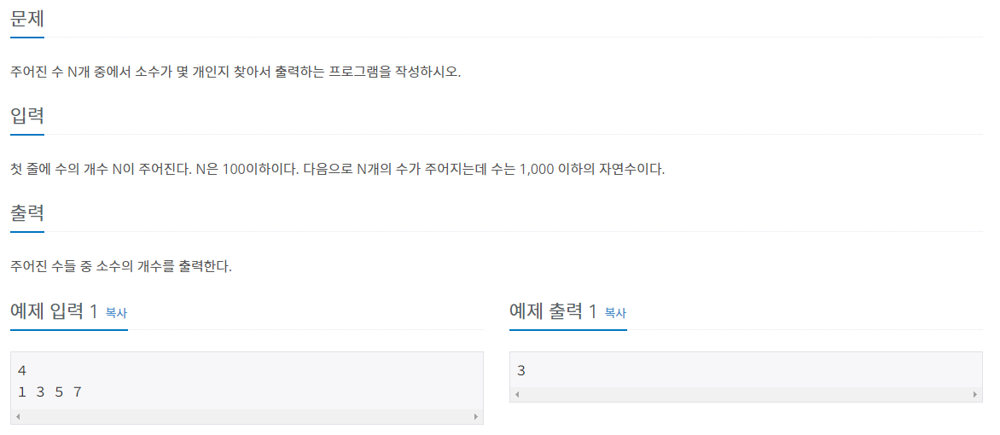

#INFO
난이도 : SIVLER5
문제유형 : 소수 판별 알고리즘
출처 : https://www.acmicpc.net/problem/1978

#SOLVE
단순히 소수를 판별할 수 있는가에 대한 문제였다.
다양한 방식으로 문제를 풀이할 수 있지만, 1과 자신을 제외한 수 (즉, n - 1) 까지 반복문을 돌려 자기 자신과 나누어 나머지가 존재하는 지 판별하는 방식으로 문제를 풀이하였다.
만약 나머지가 존재한다면 소수가 아니기에 false를 리턴한다.
단, 소수 판별 시 2 ~ n -1 까지의 수는 대칭을 이루기에 math.h 헤더의 sqrt 함수를 사용해 제곱근 까지만 탐색을 수행하였다.
bool isPrime(int n){
if(n < 2) return false;
for(int i = 2; i <= sqrt(n); ++i)
if(n % i == 0) return false;
return true;
}#CODE
#include <iostream>
#include <math.h>
using namespace std;
bool isPrime(int n){
if(n < 2) return false;
for(int i = 2; i <= sqrt(n); ++i)
if(n % i == 0) return false;
return true;
}
int main(){
ios::sync_with_stdio(0);
cin.tie(0); cout.tie(0);
int t;
cin >> t;
int n, ans = 0;
while(t--){
cin >> n;
if(isPrime(n)) ans++;
}
cout << ans << '\n';
return 0;
}